Statistics and Modelling
Meenakshi Kushwaha
1st September, 2022
Packages for today
Today we will cover (a lot)
- Summary statistics
- Linear Regression models
- Handling multiple models
- Machine Learning terminology (very briefly)
Presenting Summary Statistics
Simple table in R
| year | pop | lifeExp |
|---|---|---|
| 1982 | 708000000 | 56.596 |
| 1987 | 788000000 | 58.553 |
| 1992 | 872000000 | 60.223 |
| 1997 | 959000000 | 61.765 |
| 2002 | 1034172547 | 62.879 |
| 2007 | 1110396331 | 64.698 |
Summary Statistics
Generate summary statistics by continent for gapminder dataset
| Characteristic | N = 1,7041 |
|---|---|
| continent | |
| Africa | 624 (37%) |
| Americas | 300 (18%) |
| Asia | 396 (23%) |
| Europe | 360 (21%) |
| Oceania | 24 (1.4%) |
| year | 1,980 (1,966, 1,993) |
| lifeExp | 61 (48, 71) |
| pop | 7,023,596 (2,793,664, 19,585,222) |
| gdpPercap | 3,532 (1,202, 9,325) |
| 1 n (%); Median (IQR) | |
Customizing your table
| Characteristic | N = 1,7041 |
|---|---|
| continent | |
| Africa | 624 (37%) |
| Americas | 300 (18%) |
| Asia | 396 (23%) |
| Europe | 360 (21%) |
| Oceania | 24 (1.4%) |
| lifeExp | 61 (48, 71) |
| pop | 7,023,596 (2,793,664, 19,585,222) |
| gdpPercap | 3,532 (1,202, 9,325) |
| 1 n (%); Median (IQR) | |
Customizing your table
| Characteristic | N = 1,7041 |
|---|---|
| continent | |
| Africa | 624 (37%) |
| Americas | 300 (18%) |
| Asia | 396 (23%) |
| Europe | 360 (21%) |
| Oceania | 24 (1.4%) |
| lifeExp | 61 (48, 71) |
| gdpPercap | 3,532 (1,202, 9,325) |
| 1 n (%); Median (IQR) | |
Customizing your table
| Characteristic | N = 1,7041 |
|---|---|
| continent | |
| Africa | 624 (37%) |
| Americas | 300 (18%) |
| Asia | 396 (23%) |
| Europe | 360 (21%) |
| Oceania | 24 (1.4%) |
| lifeExp | 61 (48, 71) |
| pop | 7,023,596 (2,793,664, 19,585,222) |
| gdpPercap | 3,532 (1,202, 9,325) |
| 1 n (%); Median (IQR) | |
Saving your summary table
- Save as image, RTF, LaTeX, and Word file
- Embed in Rmarkdown output . . .
Save your table as .docx file
Demo
Modelling
A simple linear model in R
What is the relationship between Life Expectancy and Population
is the same as
Linear regression in R
lm (outcome ~ exp var 1 + exp var 2 +...., data = <your_df>)
is the same as
your_df %>% lm(outcome ~ exp var 1 + exp var 2 +....,)
The + here means include and not addtion
Your first linear model
Call:
lm(formula = lifeExp ~ year, data = .)
Coefficients:
(Intercept) year
-585.6522 0.3259 Your first linear model
Now, we will assign the model to an object to extract more information
Call:
lm(formula = lifeExp ~ year, data = .)
Residuals:
Min 1Q Median 3Q Max
-39.949 -9.651 1.697 10.335 22.158
Coefficients:
Estimate Std. Error t value Pr(>|t|)
(Intercept) -585.65219 32.31396 -18.12 <2e-16 ***
year 0.32590 0.01632 19.96 <2e-16 ***
---
Signif. codes: 0 '***' 0.001 '**' 0.01 '*' 0.05 '.' 0.1 ' ' 1
Residual standard error: 11.63 on 1702 degrees of freedom
Multiple R-squared: 0.1898, Adjusted R-squared: 0.1893
F-statistic: 398.6 on 1 and 1702 DF, p-value: < 2.2e-16Notice that this is the same summary function that you use with df. But depending on the input, it will give diff output.
Testing model assumptions
Plot diagnostics - residual vs fitted
Residuals should be equally spread around the horizontal line - any patterns indicate non-linear relationsihp
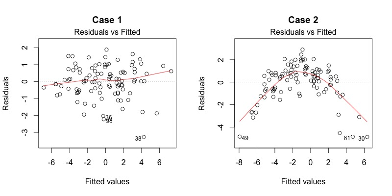
Plot diagnostics - Normal Q-Q
Residuals are normally distributed if dots fall on the straight line
 ## Plot diagnostics - Scale-location
## Plot diagnostics - Scale-location
This plot shows if residuals are spread equally along the range of predictors  ## Plot diagnostics - Residuals vs Leverage
## Plot diagnostics - Residuals vs Leverage
Are there influential points in the data
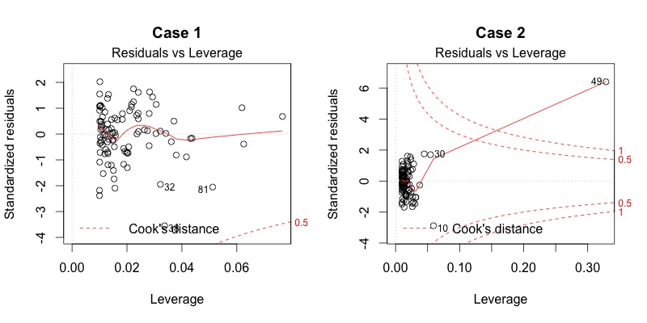
Demo
Multiple models
How does life expectancy change with time in each country
Global vs local trend
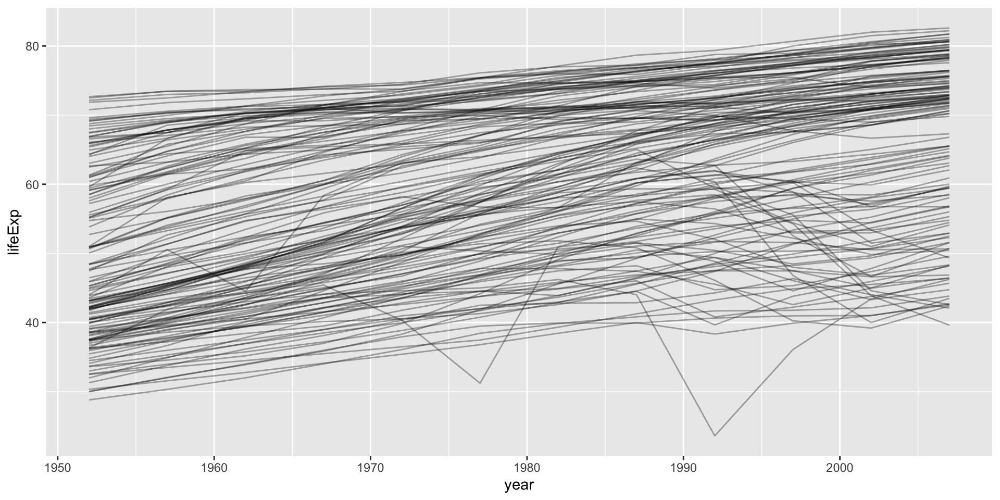Keep related things together group_nest()
Nest by country
# A tibble: 6 × 3
continent country data
<fct> <fct> <list<tibble[,5]>>
1 Africa Algeria [12 × 5]
2 Africa Angola [12 × 5]
3 Africa Benin [12 × 5]
4 Africa Botswana [12 × 5]
5 Africa Burkina Faso [12 × 5]
6 Africa Burundi [12 × 5]- by default list column is named
data year1950for meaningful intercepts- add
continentto keep it along withcountry
One country example
# A tibble: 12 × 4
year lifeExp pop gdpPercap
<int> <dbl> <int> <dbl>
1 1952 37.4 372000000 547.
2 1957 40.2 409000000 590.
3 1962 43.6 454000000 658.
4 1967 47.2 506000000 701.
5 1972 50.7 567000000 724.
6 1977 54.2 634000000 813.
7 1982 56.6 708000000 856.
8 1987 58.6 788000000 977.
9 1992 60.2 872000000 1164.
10 1997 61.8 959000000 1459.
11 2002 62.9 1034172547 1747.
12 2007 64.7 1110396331 2452.# A tibble: 12 × 7
continent country year lifeExp pop gdpPercap year1950
<fct> <fct> <int> <dbl> <int> <dbl> <dbl>
1 Asia India 1952 37.4 372000000 547. 2
2 Asia India 1957 40.2 409000000 590. 7
3 Asia India 1962 43.6 454000000 658. 12
4 Asia India 1967 47.2 506000000 701. 17
5 Asia India 1972 50.7 567000000 724. 22
6 Asia India 1977 54.2 634000000 813. 27
7 Asia India 1982 56.6 708000000 856. 32
8 Asia India 1987 58.6 788000000 977. 37
9 Asia India 1992 60.2 872000000 1164. 42
10 Asia India 1997 61.8 959000000 1459. 47
11 Asia India 2002 62.9 1034172547 1747. 52
12 Asia India 2007 64.7 1110396331 2452. 57Linear model per country
# A tibble: 142 × 4
continent country data model
<fct> <fct> <list<tibble[,5]>> <list>
1 Africa Algeria [12 × 5] <lm>
2 Africa Angola [12 × 5] <lm>
3 Africa Benin [12 × 5] <lm>
4 Africa Botswana [12 × 5] <lm>
5 Africa Burkina Faso [12 × 5] <lm>
6 Africa Burundi [12 × 5] <lm>
7 Africa Cameroon [12 × 5] <lm>
8 Africa Central African Republic [12 × 5] <lm>
9 Africa Chad [12 × 5] <lm>
10 Africa Comoros [12 × 5] <lm>
# … with 132 more rowsQuiz
- How would you count how many rows are there per country?
- Plot Life expectancy
LifeExpVSYearfor India
map practice
How many rows per country?
# A tibble: 4 × 2
country n
<fct> <int>
1 Algeria 12
2 Angola 12
3 Benin 12
4 Botswana 12Plotting for one country
India
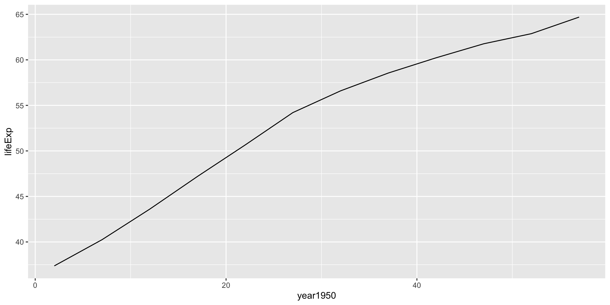
Linear model for India
Call:
lm(formula = lifeExp ~ year1950, data = .)
Residuals:
Min 1Q Median 3Q Max
-2.36441 -1.57472 0.04961 1.35537 2.30522
Coefficients:
Estimate Std. Error t value Pr(>|t|)
(Intercept) 38.25911 0.98600 38.80 3.09e-12 ***
year1950 0.50532 0.02885 17.52 7.81e-09 ***
---
Signif. codes: 0 '***' 0.001 '**' 0.01 '*' 0.05 '.' 0.1 ' ' 1
Residual standard error: 1.725 on 10 degrees of freedom
Multiple R-squared: 0.9684, Adjusted R-squared: 0.9653
F-statistic: 306.8 on 1 and 10 DF, p-value: 7.813e-09Linear model for Rwanda
Call:
lm(formula = lifeExp ~ year1950, data = .)
Residuals:
Min 1Q Median 3Q Max
-17.310 -1.445 2.410 3.073 6.021
Coefficients:
Estimate Std. Error t value Pr(>|t|)
(Intercept) 42.83361 3.74890 11.426 4.63e-07 ***
year1950 -0.04583 0.10969 -0.418 0.685
---
Signif. codes: 0 '***' 0.001 '**' 0.01 '*' 0.05 '.' 0.1 ' ' 1
Residual standard error: 6.558 on 10 degrees of freedom
Multiple R-squared: 0.01716, Adjusted R-squared: -0.08112
F-statistic: 0.1746 on 1 and 10 DF, p-value: 0.6849Verify by plotting for Rwanda
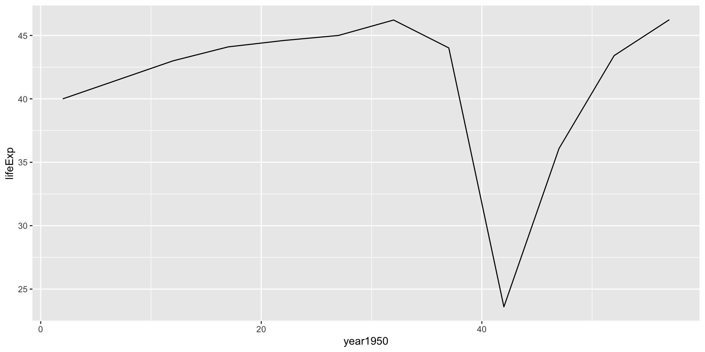
Cleaning model outputs using broom package
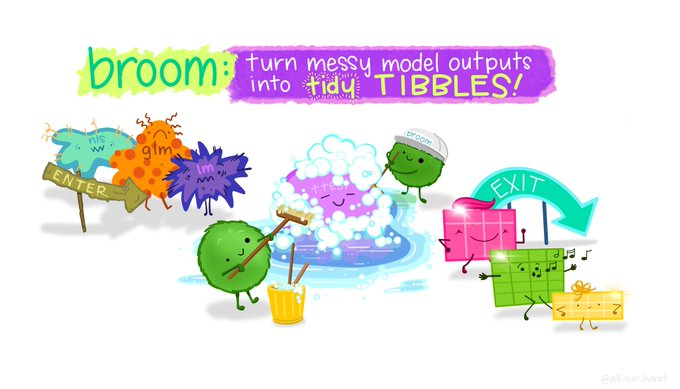
tidy()summarizes information about model componentsglance()reports information about the entire modelaugment()adds informations about observations to a dataset
How doesbroom clean up model outputs
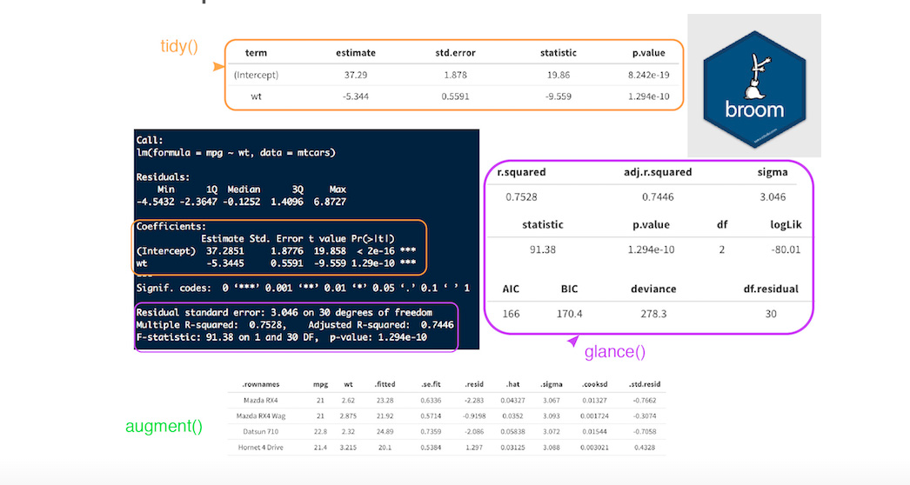 :::aside Source ::: ## Tyding models #### Extract from nested lists
# A tibble: 142 × 8
continent country data model glance tidy augment rsq
<fct> <fct> <list<t> <lis> <list> <list> <list> <dbl>
1 Africa Algeria [12 × 5] <lm> <tibble> <tibble> <tibble> 0.985
2 Africa Angola [12 × 5] <lm> <tibble> <tibble> <tibble> 0.888
3 Africa Benin [12 × 5] <lm> <tibble> <tibble> <tibble> 0.967
4 Africa Botswana [12 × 5] <lm> <tibble> <tibble> <tibble> 0.0340
5 Africa Burkina Faso [12 × 5] <lm> <tibble> <tibble> <tibble> 0.919
6 Africa Burundi [12 × 5] <lm> <tibble> <tibble> <tibble> 0.766
7 Africa Cameroon [12 × 5] <lm> <tibble> <tibble> <tibble> 0.680
8 Africa Central African R… [12 × 5] <lm> <tibble> <tibble> <tibble> 0.493
9 Africa Chad [12 × 5] <lm> <tibble> <tibble> <tibble> 0.872
10 Africa Comoros [12 × 5] <lm> <tibble> <tibble> <tibble> 0.997
# … with 132 more rowsDo linear models fit all countries?
Do linear models fit all countries?
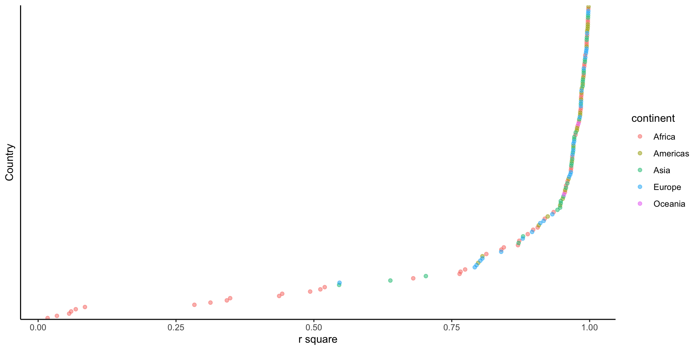
Countries with non-linear trends
Focus on countries with low rsq
Countries with non-linear trends
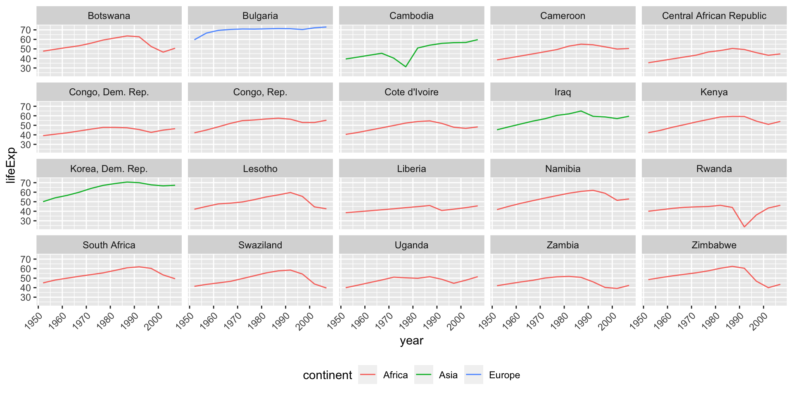
Countries with strong linear trends
Focus on countries with high rsq
Countries with strong linear trends
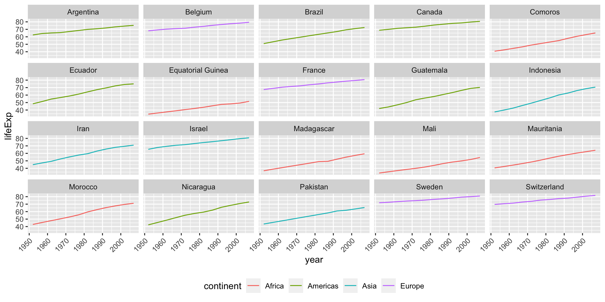
Quiz -Interpreting the linear model
- What is the intercept here?
- What is the slope?
- What would the intercept be with
year
Interpreting the linear model
India, lifeExp~year1950

Interpreting the linear model
India, lifeExp~year
Visualizing all models
gm_models %>%
unnest(tidy) %>%
select(continent, country, rsq, term, estimate) %>%
pivot_wider(names_from = term, values_from = estimate) %>%
ggplot(aes(x = `(Intercept)`, y = year1950)) +
geom_point(aes(colour = continent, size = rsq)) +
geom_smooth(se = FALSE, method = "loess") +
scale_size_area() + labs(x = "Life expectancy (1950)", y = "Yearly improvement")Visualizing all models
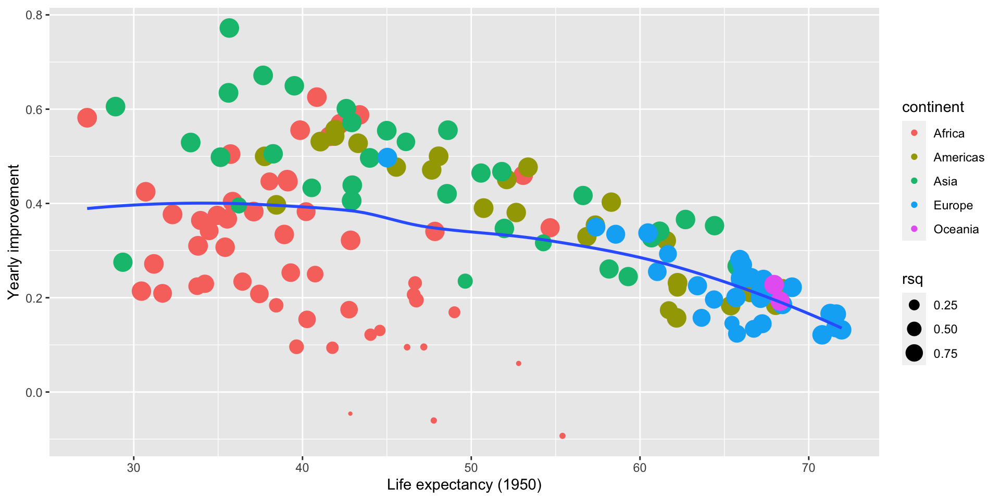
Where does Linear regression fit in Machine Learning?
ML Cheatsheet
{kind=link}
Resources
-Tutorial by A. Ginolhac
-R for Data Science Book - Modelling chapters